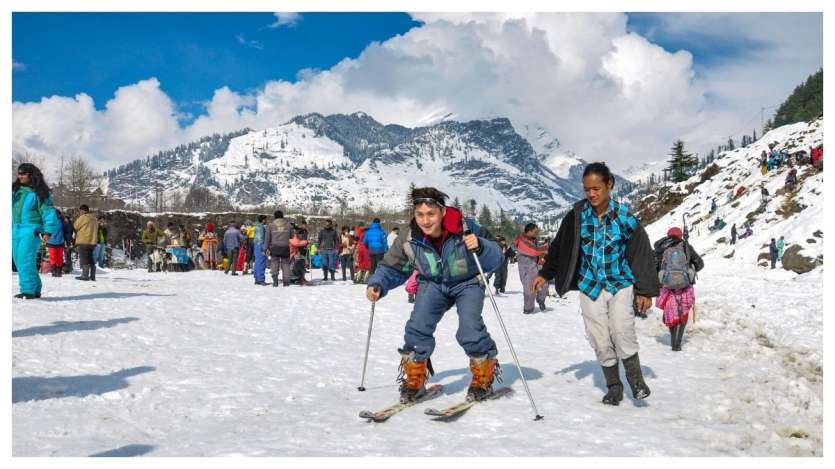
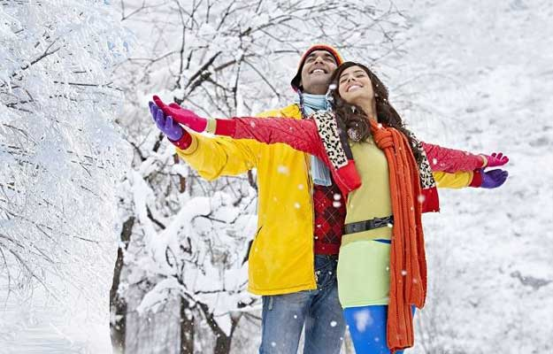
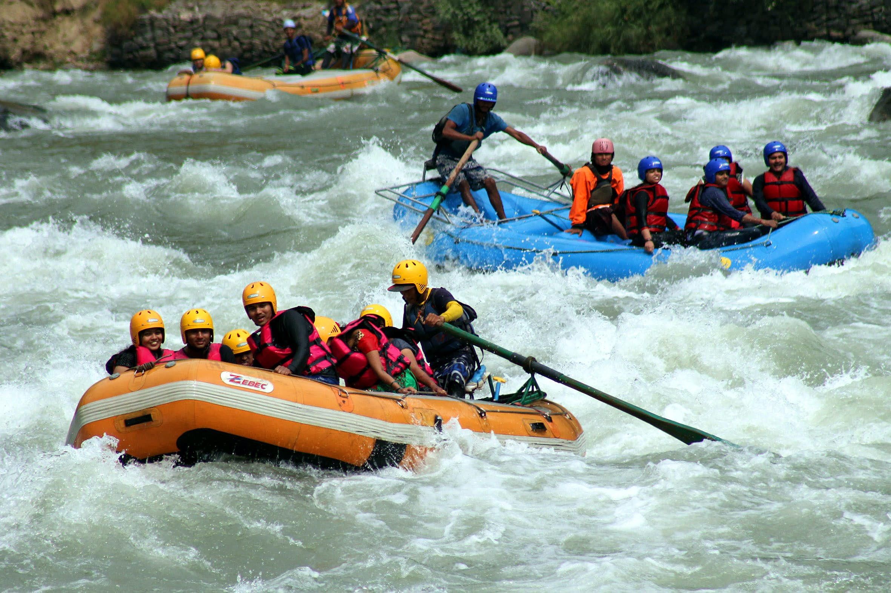
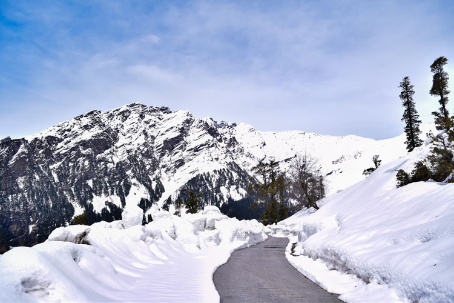

Manali Honeymoon Package
|  |
 |
 |
 |
7Days/6Night
Jumbo Discount Price Rs.39,999/-
About the Destination
Manali, a small resort town located in the picturesque state of Himachal Pradesh, has been providing respite from the summer heat of the plains for quite some time now. Once a sleepy hamlet, Manali packages for couples have risen to prominence as they take you to what is now one of the most important hill stations in India.
Experience Kerala on a Honeymoon
As soon as you set foot in this town on your Manali honeymoon trip, the clean and pure mountain air, accentuated by the fragrance of pines will instantly refresh you and fill you with anticipation of all the exciting activities in your Kullu Manali honeymoon package. The small-town vibe, the uneven mountainous roads, adorable little house with locals engaged in animated chatter, and the gentle breeze caressing your face; this is an experience that stays etched in the memory.
Things to do in Manali during your Honeymoon:
- Hadimba Temple
- Museum of Himachal Culture & Folk Art
- Solang Valley
- Naggar
- Rohtang Pass
Best Time to Visit Manali
Manali is touted to be a destination ‘for all seasons and all reasons’. A Manali trip package for couples for the summers (March to June) will allow you to enjoy adventure sports and most of the attractions of the town. However, if you wish to witness snowfall and do some skiing, the winter months (October to February) would be the best.

|
|